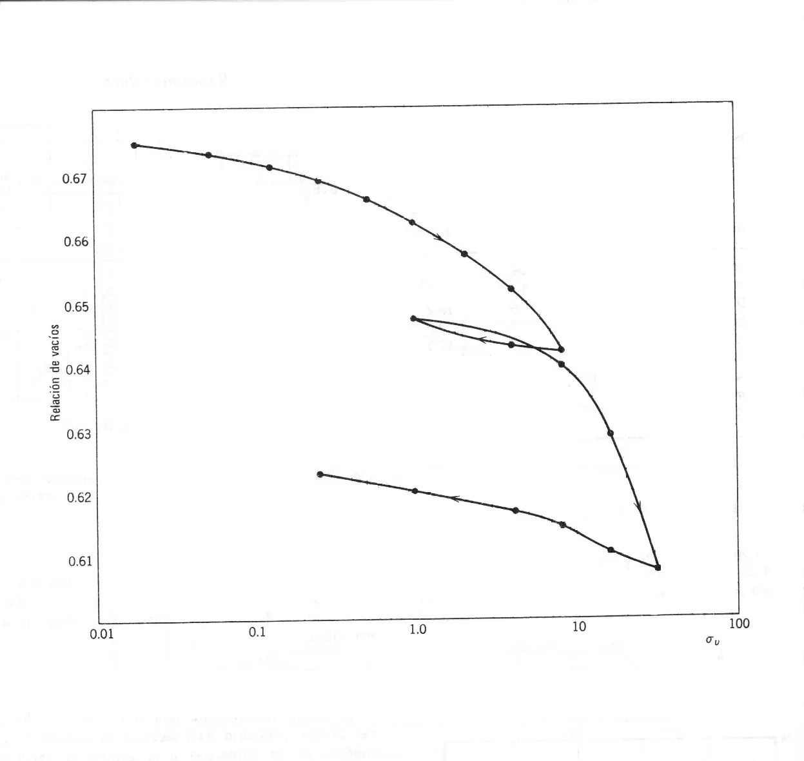

Consolidación y asentamientos#
Importante
Objetivos de aprendizaje
Explicar el proceso de consolidación y diferenciarlo de la compactación.
Interpretar la curva de compresibilidad e-log σ’ y determinar la presión de preconsolidación.
Diferenciar las arcillas normalmente consolidadas y sobreconsolidadas, y relacionarlas con su historia geológica.
Calcular asentamientos por consolidación primaria y el tiempo en que ocurren.
El proceso de consolidación#
La consolidación es la disminución del volumen de una masa de suelo saturado con el tiempo, bajo un estado de carga. Cuando se aplica una carga sobre un suelo saturado, el agua de los poros, que es prácticamente incompresible, absorbe inicialmente todo el incremento de esfuerzo en forma de un exceso de presión de poros. Con el tiempo el agua drena hacia las fronteras permeables, el exceso de presión se disipa y la carga se transfiere progresivamente al esqueleto del suelo como esfuerzo efectivo. El cambio de volumen del suelo es igual al volumen de agua expulsada.

Figura 41 Analogía del resorte y el pistón para el proceso de consolidación.#
El proceso tiene tres consecuencias principales: la reducción del volumen de poros, que se manifiesta como asentamiento del terreno y de la estructura; el aumento del esfuerzo efectivo, que incrementa la resistencia al corte del suelo; y la disminución de la relación de vacíos.
Se distinguen tres componentes del asentamiento. La consolidación inicial o asentamiento inmediato se produce al aplicar la carga, por deformación elástica y por compresión del aire en suelos no saturados. La consolidación primaria corresponde a la disipación del exceso de presión de poros y es la que describe la teoría de Terzaghi. La consolidación secundaria o fluencia lenta continúa después de disipada la presión de poros, por reacomodo plástico de las partículas; es importante en suelos orgánicos y turbas.
En arenas y gravas la consolidación ocurre durante la construcción porque la permeabilidad es alta. En arcillas puede durar años o décadas, como en la torre de Pisa o en los edificios de la Ciudad de México.
El ensayo de consolidación#
El ensayo edométrico o de consolidación unidimensional se realiza sobre una muestra inalterada confinada lateralmente en un anillo rígido, entre piedras porosas que permiten el drenaje. Se aplican incrementos sucesivos de carga, normalmente duplicando la anterior, y para cada uno se registra la deformación con el tiempo hasta que se disipa la presión de poros. Al final de cada etapa se calcula la relación de vacíos, y los resultados se presentan en la curva de compresibilidad \(e\)-\(\log\sigma'\).


Figura 42 Curva de compresibilidad e-log σ’ con los tramos de recompresión, compresión virgen y descarga.#
La curva muestra un tramo inicial casi horizontal y de curvatura creciente (recompresión), seguido de un tramo recto y más inclinado (compresión virgen). Si se descarga, el suelo se expande siguiendo un tramo de pendiente pequeña, y al recargar vuelve a la línea virgen. Las pendientes de estos tramos definen el índice de compresión \(C_c\) y el índice de expansión o recompresión \(C_s\):
Cuando no hay ensayos, Terzaghi y Peck (1967) propusieron estimar el índice de compresión de arcillas inalteradas con \(C_c\approx0{,}009\,(LL-10)\). El índice de expansión suele estar entre 1/5 y 1/10 de \(C_c\).
Presión de preconsolidación e historia geológica#
El punto de quiebre entre el tramo de recompresión y la línea virgen corresponde a la presión de preconsolidación \(\sigma'_c\): el máximo esfuerzo efectivo que el suelo ha soportado en su historia. Casagrande (1936) propuso una construcción gráfica para determinarla: se ubica el punto de máxima curvatura de la curva, se trazan por él una horizontal y una tangente, se dibuja la bisectriz del ángulo entre ambas, y la intersección de esta bisectriz con la prolongación hacia atrás del tramo virgen da \(\sigma'_c\).
Comparando \(\sigma'_c\) con el esfuerzo efectivo actual \(\sigma'_0\) se define la razón de sobreconsolidación:
Una arcilla es normalmente consolidada (NC) si \(OCR\approx1\): nunca ha soportado un esfuerzo mayor que el actual. Es sobreconsolidada (OC) si \(OCR>1\). La sobreconsolidación es un registro de la historia geológica del depósito: puede deberse a la erosión de sedimentos que antes lo cubrían, a la carga de glaciares ya desaparecidos, a descensos antiguos del nivel freático, a la desecación superficial o a la cementación. Por ejemplo, una costra superficial sobreconsolidada por desecación sobre una arcilla blanda normalmente consolidada es un perfil típico de depósitos lacustres y de llanuras de inundación.
Suelos residuales y preconsolidación
En los suelos residuales tropicales la curva de compresibilidad presenta con frecuencia un quiebre que parece una presión de preconsolidación, pero que no se debe a una carga previa sino a la cementación y a la estructura heredada de la roca. Se denomina esfuerzo de fluencia (yield stress) y su interpretación como historia de carga es incorrecta [Wesley, 2010].
Cálculo del asentamiento por consolidación primaria#
Para un estrato de espesor \(H\) con relación de vacíos inicial \(e_0\), la deformación vertical es \(\Delta H/H=\Delta e/(1+e_0)\). Combinando con la curva de compresibilidad se obtienen las expresiones para los tres casos posibles, evaluando \(\sigma'_0\) y \(\Delta\sigma\) a la mitad del estrato.
Arcilla normalmente consolidada:
Arcilla sobreconsolidada con \(\sigma'_0+\Delta\sigma\le\sigma'_c\):
Arcilla sobreconsolidada con \(\sigma'_0+\Delta\sigma>\sigma'_c\):
Para estratos gruesos conviene dividirlos en subcapas y sumar sus asentamientos, porque \(\sigma'_0\) y \(\Delta\sigma\) varían con la profundidad.
Ejemplo resuelto: asentamiento por consolidación
Un perfil tiene 3 m de arena seca (\(\gamma=18\) kN/m³) sobre 4 m de arcilla saturada (\(\gamma_{sat}=19\) kN/m³, \(e_0=1{,}0\), \(C_c=0{,}35\), \(C_s=0{,}06\)), con el nivel freático en el contacto. Un relleno produce un incremento de esfuerzo de 50 kPa a la mitad de la arcilla. Calcule el asentamiento si la arcilla es (a) normalmente consolidada y (b) sobreconsolidada con \(\sigma'_c=100\) kPa.
Esfuerzo efectivo inicial a la mitad de la arcilla: \(\sigma'_0=3(18)+2(19-9{,}81)=54+18{,}4=72{,}4\) kPa. El esfuerzo final es \(72{,}4+50=122{,}4\) kPa.
(a) NC: \(S_c=\dfrac{0{,}35\times4}{1+1{,}0}\log\dfrac{122{,}4}{72{,}4}=0{,}70\times0{,}228=0{,}160\) m, es decir, 16 cm.
(b) OC con \(\sigma'_c=100\) kPa: como \(122{,}4>100\), se usa la tercera expresión: \(S_c=\dfrac{0{,}06\times4}{2}\log\dfrac{100}{72{,}4}+\dfrac{0{,}35\times4}{2}\log\dfrac{122{,}4}{100}=0{,}017+0{,}061=0{,}078\) m, unos 8 cm.
La historia de esfuerzos reduce el asentamiento a la mitad. Determinar bien \(\sigma'_c\), y entender geológicamente su origen, es tan importante como el valor de \(C_c\).
Velocidad de la consolidación#
Terzaghi (1925) planteó la ecuación diferencial de la consolidación unidimensional, que describe la disipación del exceso de presión de poros \(u_e\) con el tiempo:
donde \(c_v\) es el coeficiente de consolidación y \(m_v\) el coeficiente de compresibilidad volumétrica. La solución se expresa en términos del factor tiempo adimensional:
donde \(H_{dr}\) es la longitud de la trayectoria de drenaje más larga: la mitad del espesor si el estrato drena por ambas caras, y el espesor completo si drena por una sola. El grado de consolidación promedio \(U\) se relaciona con \(T_v\); dos valores útiles son \(T_v=0{,}197\) para \(U=50\,\%\) y \(T_v=0{,}848\) para \(U=90\,\%\). El coeficiente \(c_v\) se obtiene de las curvas deformación-tiempo del ensayo edométrico por los métodos de Casagrande o de Taylor.
Ejemplo resuelto: tiempo de consolidación
Para la arcilla del ejemplo anterior, drenada por arriba (arena) y por abajo (estrato de grava), con \(c_v=3\) m²/año, ¿cuánto tarda en producirse el 90 % del asentamiento?
\(H_{dr}=4/2=2\) m. \(t_{90}=T_v\,H_{dr}^2/c_v=0{,}848\times4/3=1{,}13\) años.
Si la base de la arcilla fuera impermeable, \(H_{dr}=4\) m y el tiempo sería cuatro veces mayor, 4,5 años. Identificar lentes de arena dentro de una arcilla, que acortan las trayectorias de drenaje, es una contribución directa de la descripción geológica de los sondeos.
Lecturas recomendadas#
Ejercicios#
Un estrato de arcilla NC de 6 m tiene \(LL=55\) y \(e_0=1{,}2\). Estime \(C_c\) y calcule el asentamiento producido por un incremento de 40 kPa si \(\sigma'_0=60\) kPa a la mitad del estrato.
¿Qué procesos geológicos pueden explicar una arcilla con \(OCR=4\) en los primeros 3 m y \(OCR=1\) por debajo?
Calcule el tiempo para el 50 % de consolidación de un estrato de 10 m drenado solo por arriba con \(c_v=1{,}5\) m²/año.